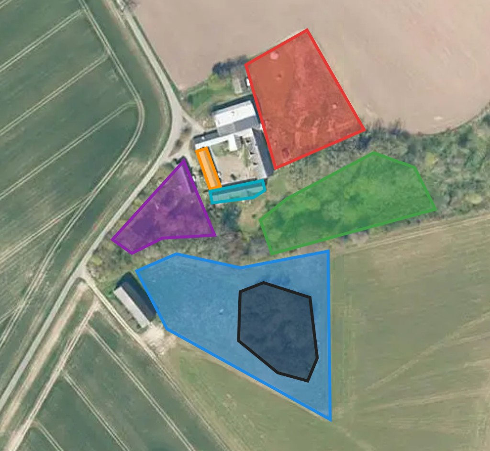

Om Kobbegaard
Kobbegaard er en gammel gård, der i dag er et bofællesskab. Det er ikke et hotel eller en organiseret ferieform — det er et sted, der gradvist udvikler sig med de mennesker, der bor og opholder sig her.
Områder på gården

Om Kobbegaard
Kobbegaard er en gammel gård, der i dag er et bofællesskab. Det er ikke et hotel eller en organiseret ferieform — det er et sted, der gradvist udvikler sig med de mennesker, der bor og opholder sig her.
